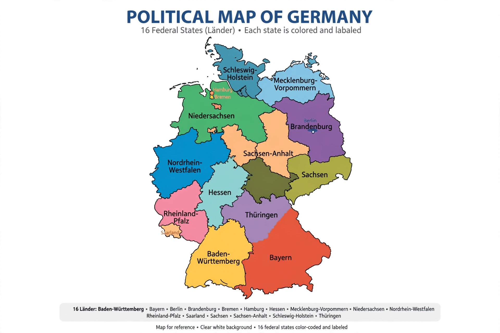

The Federal Republic of Germany is a federation of sixteen constituent states, called Länder (singular Land). Three of them — Berlin, Hamburg and Bremen — are city-states, while Bavaria, Saxony and Thuringia style themselves "free states" (Freistaat), a historical designation with no legal significance. Each Land has its own constitution, parliament (Landtag, or Bürgerschaft in the city-states), and government headed by a Minister-President (governing mayor in Berlin, Hamburg and Bremen).
| State | Capital | Notes |
|---|---|---|
| Baden-Württemberg | Stuttgart | Formed 1952 from three postwar states |
| Bavaria (Bayern) | Munich | Largest state by area; "Free State" |
| Berlin | — (capital and state) | City-state and federal capital |
| Brandenburg | Potsdam | Re-established 1990 |
| Bremen | Bremen | Smallest state; city-state with Bremerhaven |
| Hamburg | — (capital and state) | City-state; Free and Hanseatic City |
| Hesse (Hessen) | Wiesbaden | Frankfurt am Main is its largest city |
| Lower Saxony (Niedersachsen) | Hanover | Formed 1946 |
| Mecklenburg-Vorpommern | Schwerin | Baltic coast state; re-established 1990 |
| North Rhine-Westphalia | Düsseldorf | Most populous state (about 18 million) |
| Rhineland-Palatinate | Mainz | Formed 1946 in the French occupation zone |
| Saarland | Saarbrücken | Joined the Federal Republic in 1957 after a referendum |
| Saxony (Sachsen) | Dresden | "Free State"; re-established 1990 |
| Saxony-Anhalt | Magdeburg | Re-established 1990 |
| Schleswig-Holstein | Kiel | Northernmost state, between North and Baltic Seas |
| Thuringia (Thüringen) | Erfurt | "Free State"; re-established 1990 |
Under the Basic Law, state governments implement most federal legislation and are responsible for areas such as policing, education and culture. The Länder participate in federal legislation through the Bundesrat, where each state has between three and six votes depending on population (69 in total), cast as a bloc by its government. The states of the former East Germany — Brandenburg, Mecklenburg-Vorpommern, Saxony, Saxony-Anhalt and Thuringia, together with the reunified Berlin — acceded to the Federal Republic on 3 October 1990.